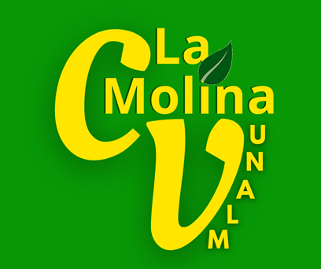

CENTRO DE VENTAS DE LA UNALM
Es una empresa distinguida por ofrecer a sus clientes productos orgánicos y naturales, destacando entre ellos los productos lácteos elaborados por la Planta Piloto de Leche de la Universidad Agraria de La Molina.
Es una organización de ambiente cálido y amigable fundada por los ingenieros Ignacio Lombardi y Fernando Bulnes que nació como un proyecto de iniciativa propia debido a que las instalaciones productoras y plantas orgánicas de la UNALM no podían recibir a todo el público que conocía la calidad de sus productos.
Antes de la pandemia del COVID-19 el Centro de Ventas atendía al público de forma simultánea con la Planta Piloto de Leche La Molina, pero iniciada la cuarentena por motivos de seguridad la Planta Piloto no recibe público lo cual permitió que el Centro de Ventas sea el principal distribuidor de los productos lácteos de la Universidad Agraria, la empresa ha ido innovando sus redes sociales y adaptándose a la nueva realidad implemento el servicio delivery para ofrecer un mejor servicio a sus clientes.
Ve aquí la entrevista 👇
Volver arriba